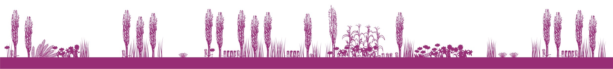

Entre Chinampas
Lecturas y actividades para 5º y 6º de primaria
Nodo Xochimilco
Proyecto Escribe y lee tu mundo:
Cultura científica y escritura creativa para la inclusión social
Libro Digital de la Cultura Chinampera para las escuelas públicas.
Esta publicación es producto de la colaboración de las siguientes personas:
Abuelita y sabia comunitaria Amalia Salas Casales. Maestros Chinamperos: Pedro Méndez, Felipe Barrera Aguirre y Mario Rufino, integrantes de la Escuela Chinampera. Jóvenes investigadores de la Generación Cero de la Escuela Chinampera: Fabiola Guadalupe Buendía Barbosa, Katherine Marlene Jiménez Dueñas, Luz María Jiménez Nieto, Cintia Jiménez Ramírez, Jaciel Martínez García, Josué Daniel Martínez Freire, Aldo Martínez Rentería y Mixtli Barrera Fernández.
Investigadoras del Grupo Red de Educación Científica Intercultural (GRECI): Alejandra García Franco (UAM Cuajimalpa) Adrianna Gómez Galindo (CINDESTAV Monterrey) Eurídice Sosa Peinado (UPN), Liliana Valladares Riveroll (UNAM FFyL) y Luz Lazos Ramírez (UNAM FFyL).
Jóvenes investigadoras asociadas a GRECI: Aketzali González Santiago, Selene Kareli Zepeda Pioquinto y Verónica Nancy Granados Flores.
Becarias del proyecto “Libro Digital de la Cultura Chinampera para las escuelas públicas”: Ana Sofía Vázquez Solís, Andrea Renata Pérez Juárez, Fernanda Montero Salgado, Estefanía Castro Pérez y Paola Carapia Martínez.
Las instituciones que colaboran en el proyecto “Escribe y lee tu mundo”: Universidad Autónoma Metropolitana Unidad Cuajimalpa; Centro de Investigación y de Estudios Avanzados del Instituto Politécnico Nacional unidad Monterrey; Universidad Nacional Autónoma de México, Facultad de Filosofía y Letras; Universidad Pedagógica Nacional, Unidad Ajusco.
Fotografía de portada. Diversidad de cultivos siembra Felipe en su chinampa lo que permite la vida de gran variedad de especies de insectos. Foto tomada por equipo de Investigador@s Comunitari@s y Educativ@s del Nodo Xochimilco
Esta publicación fue financiada con recursos del Proyecto “Escribe y lee tu mundo: Cultura científica y escritura creativa para la inclusión social” (Conahcyt 319132) y del Proyecto “Libro Digital de la Cultura Chinampera para las escuelas públicas”, de la Convocatoria “Propuesta de Investigación e Intervención en el Ámbito Educativo” de la Universidad Pedagógica Nacional Unidad Ajusco.
SECRETARÍA DE EDUCACIÓN PÚBLICA
Leticia Ramírez Amaya Secretaría de Educación Pública
Francisco Luciano Concheiro Bórquez Subsecretaría de Educación Superior
UNIVERSIDAD PEDAGÓGICA NACIONAL
Rosa María Torres Hernández Rectoría
María Guadalupe Olivier Téllez Secretaría Académica
Arturo Latabán López Secretaría Administrativa
Pilar María Moreno Jiménez Dirección de Biblioteca y Apoyo Académico
Cristina Leticia Barragán Gutiérrez Dirección de Difusión y Extensión Universitaria
Benjamín Díaz Salazar Dirección de Planeación
Maricruz Guzmán Chiñas Dirección de Unidades UPN
Yiseth Osorio Osorio Dirección de Servicios Jurídicos
Silvia Adriana Tapia Covarrubias Dirección de Comunicación Social
COORDINADORES DE ÁREA
Tomás Román Brito Política Educativa, Procesos Institucionales y Gestión
Jorge García Villanueva Diversidad e Interculturalidad
Gerardo Ortiz Moncada Aprendizaje y Enseñanza en Ciencias,Humanidades y Artes
Ruth Angélica Briones Fragoso Tecnologías de la Información y Modelos Alternativos
Eva Francisca Rautenberg Petersen Teoría Pedagógica
Miguel Ángel Vértiz Galván Formación Docente
Posgrado
Rosa María Castillo del Carmen Centro de Enseñanza y Aprendizaje de Lenguas
Patricia Adriana Amador Islas Unidad de Género e Inclusión
Diseño e ilustración: Erika Ramírez Rosas
Ilustración: María Fernanda Carranza Badillo
Diseño web: Crhistian Alejandro Benítez Abarca
Fotografía área: Sergio Duarte Aguirre
Fotografía de portada y contraportada: Canal de Xochimilco en el Amanecer. Fotografía realizada por el equipo Investigador@s Comunitari@s y Educativ@s del Nodo Xochimilco
Licencia: Entre Chinampas para Docentes © 2023 by Por Universidad Pedagógica Nacional, Escribe y Lee Tu Mundo,CONAHCYT 319132, Amalia Salas Casales. Maestros Chinamperos: Pedro Méndez, Felipe Barrera Aguirre y Mario Rufino,integrantes de la Escuela Chinampera. Jóvenes investigadores de la Generación Cero de la Escuela Chinampera: Fabiola Guadalupe Buendía Barbosa, Katherine Marlene Jiménez Dueñas, Luz María Jiménez Nieto, Cintia Jiménez Ramírez Jaciel Martínez García, Josué Daniel Martínez Freire, Aldo Martínez Rentería y Mixtli Barrera Fernández. Investigadoras del Grupo Red de Educación Científica Intercultural (GRECI): Alejandra García Franco (UAM Cuajimalpa) Adrianna Gómez Galindo (CINDESTAV Monterrey) Eurídice Sosa Peinado (UPN), Liliana Valladares Riveroll (UNAM FFyL) y Luz Lazos Ramírez (UNAM FFyL). Jóvenes investigadoras asociadas a GRECI: Aketzali González Santiago, Selene Kareli Zepeda Pioquinto y Verónica Nancy Granados Flores. is licensed under CC BY-NC 4.0.
Primera edición: Diciembre de 2023.
Entre Chinampas
Nodo Xochimilco
Proyecto Escribe y lee tu mundo:
Cultura científica y escritura creativa para la inclusión social
Libro Digital de la Cultura Chinampera para las escuelas públicas.
Universidad Pedagógica Nacional
CONAHCYT 319132